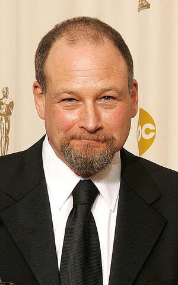

| Oscar Nominations | ||||
|---|---|---|---|---|
| Ceremony | Film | Category | Role | Result |
| 83rd Academy Awards Oscars 2011 |
Toy Story 3 | Sound Editing | Sound Editor | Nominated |
| 82nd Academy Awards Oscars 2010 |
Up | Sound Editing | Sound Editor | Nominated |
| 80th Academy Awards Oscars 2008 |
Ratatouille | Sound Editing | Sound Editor | Nominated |
| 77th Academy Awards Oscars 2005 |
The Incredibles | Sound Editing | Sound Editor | Won |
| 76th Academy Awards Oscars 2004 |
Finding Nemo | Sound Editing | Sound Editor | Nominated |
| 74th Academy Awards Oscars 2002 |
Monsters, Inc. | Sound Editing | Sound Editor | Nominated |

Michael Silvers